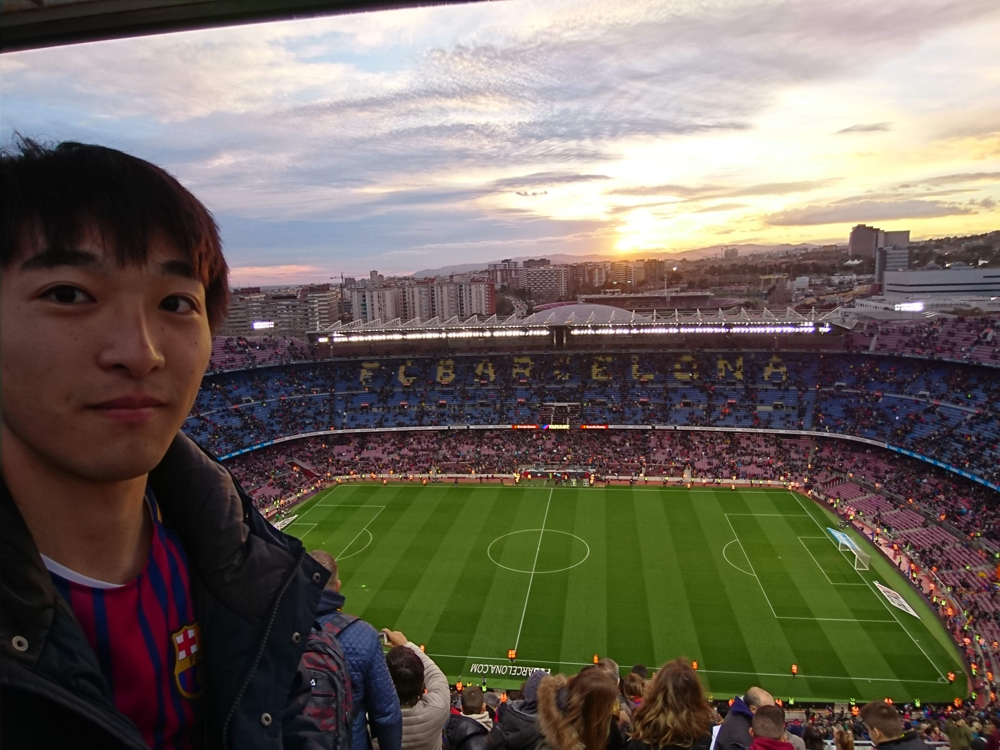

My Favorites
Football

海外サッカーを見るのが日課でDAZNは欠かせません。
イギリス、スペインへサッカーを見に行ったこともあります。
＊：バルセロナ：マンチェスター：ロンドン
Trip

学生期間は国内や海外によく旅行に行きました。
海外旅行だと韓国、タイ、ラオス、マレーシア、シンガポール
イギリス、フランス、イタリア、スペイン、アメリカ
10の国へ行きました。
Idol

人前での音楽活動をしていたこともあり、
男女問わず、歌って踊るアイドルグループを見てしまいます。
＊写真は左から二番目が自分